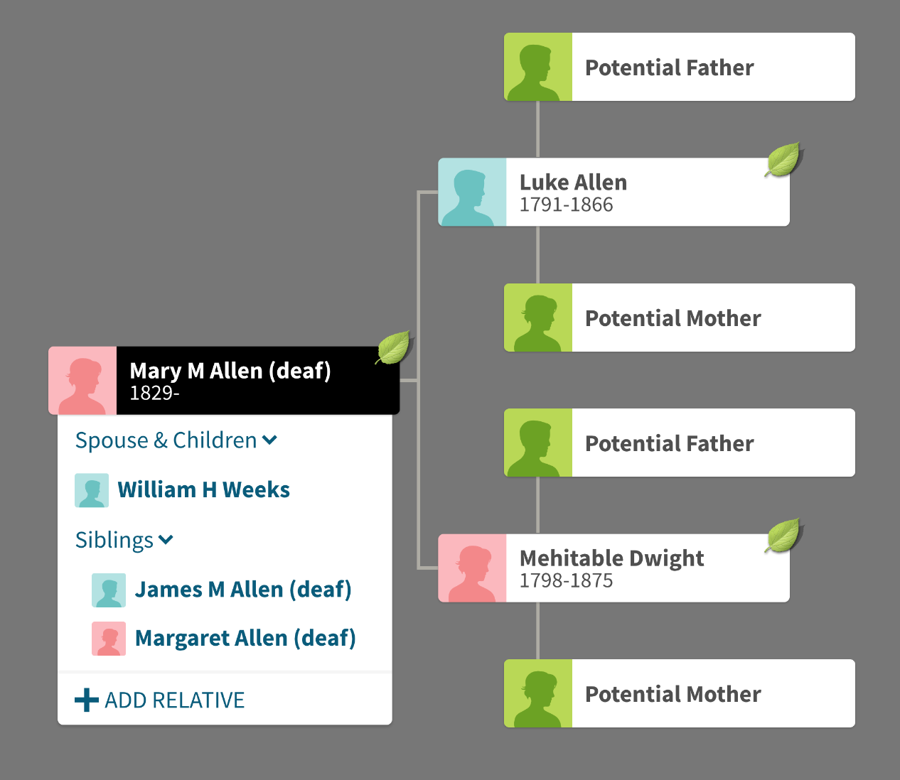

Deaf School Records

Luke and Mehitable Allen Family Tree
We created/used this tree in the Deaf School Records workshop to talk about how you can create mini “branches” of Deaf relatives who have records in schools for the deaf.
Have a lookAmerican Deaf school records are very effective in triangulating, confirming, and adding sources
They can help create stories instead of just adding additional facts
Quote
.card-blockquote
Deaf School Records
Records we used in the Deaf School Records workshop
- 1818–1854 List of Pupils in the New York Institution, &c.” in the American Annals of the Deaf & Dumb 6(4).
- 1858 List of Pupils in the New York Institution for the Instruction of the Deaf & Dumb
- 1849 Indiana State Asylum for the Education of the Deaf & Dumb Superintendent’s Report
- 1837–1858 Annual Report the American Asylum, at Hartford, for the Education and Instruction of the Deaf and Dumb
- 1859 Kentucky Institution for the Education of Deaf Mutes Annual Report
.card-title
.card-text
.card-title 1
.card-title 2
.card-title
.card-text